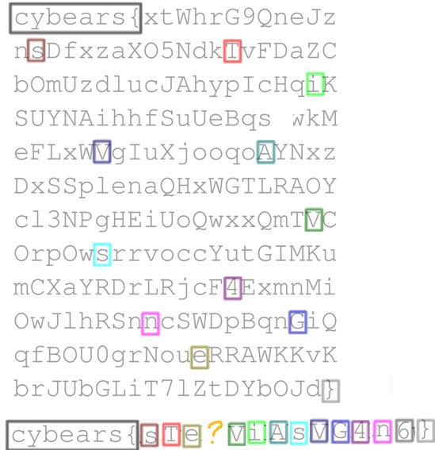

Panda's Writeups
Some bsides 23 writeups done by a noob who has never used a computer before.
Porcine Enclosure
Banner challenge Sigma
Okay, so for this one, I knew it was a Banner challenge. I went over to the CTF Admin Desk and saw the banner with the code on..

I instantly recognized the code from an escape room I played before. In it, there's a device called a 'Chrono Decoder'.


I couldn't remember the name of the darn code though. Porcine Enclosure = Pig Pen. I did a quick image search for pig pen to help me translate it and get the flag! Yay! :D
Not A Six Dot Matrix
Banner challenge Zeta
I knew that it related to this picture below:
But I've never seen it before. My way of solving it? Well... I googled 'What is a six dot matrix.' It came up with Braille... so... this is NOT braille...

So I googled 'What is NOT braille'. Nothing came up in the normal search (at least not in the first 5 results, which is the limit of my attention span), so I checked the images, and Bingo! something jumped out at me.

I had a look at the site and learned about what ELIA is. Once I knew, I was able to solve it! Yay!
Scalable Vector Grille
I did this by downloading the two files.. two images, which fit on top of each other quite nicely ..

cybears{ThiSfLAGisa4GerY}? Nope.. that's not correct. I doubt it would it have been easy anyway .. so let me check that svg in more detail ..

Yeah sus as right? let me remove that transformations ..

Still not good enough ..

Okay having a look at the names.. they're all a bit odd.. looks like someone went through and duplicated.. let me delete the extras ..

Okay and this one has no line.. hmm let me fix that ..
Okay the rectangles are numbered.. i'm guessing we should order the chars from 0-14.. i'll colour them in rainbow order ..

I put the chars in order using the coours to follow .. still.. there's one missing.. but that's okay.. I can guess that it's a g or a G now.. and yay! Got the flag.
Legal Eagle
Did you read the fine print?
So there's a special place in hell for the person who made this challenge.
My Head Hurts
I go to the URL
... http://my-head-hurts.chal.cybears.io/
Nothing there.. so I'm all 'okay wut'.. the challenge says 'My Head Hurts' so prob something to do with the headers.. so let me open up dev tools and take a look.
I tried changing the language to German, but nothing changed. I also tried changing neogitate but it didnt work ..


I thought about checking the actual file itself but was told by a helpful nerd that it wouldn't be needed.. so back onto playing with headers ..
I go to flag.html and flag.xyz and try playing with the headers there and eventually get something different!

So I need to use some bonjour croissants.. I'll admit I did bunch of stuff that was completely incorrect and got me nothing except a punch to my ego until I decide to use curl instead..

Turns out I was using dev tools wrong which is why it wasn't coming up.. but hoorah I got it!
The thing I loved about this challenge is that I could tell I was getting closer and closer bit by bit.. I really enjoyed it despite being frustrated at times.. I learned a heap I didn't know about headers and also how to use dev tools a bit better..
Cryptic Hacker Crossword
I got first blood on this one! But I have to admit .. much credit goes to Chat GPT. That being said though, it helped me learn a bunch of things which is fantastic! (eg gentoo package manager being called portage).

Dark/QR/Light
At first I thought I had was to invert one side and pop them together. So i tried that ..
Inverted one side ..
Popped them together. There was just enough modules on one side that we could stretch it across. The very middle column of data was lost. However, even once it was together it wouldn't scan. I was lucky to be taught a bit about QR codes.
The timing pattern is just an alternating black/white modules, which my code had.
format information is meant to repeat twice.. But, you can see here, it didn't.
So, I took the side of one QR code, and the side of the other, and popped them together ..
We have a match now!I get the first part of the code ..
AHMULAHDCF22!Fa:
cbasinwroefasupayv}
Okay that's looking promising.. I have a curly bracket.. whats the bet the other two halves will contain the other curly bracket.
It works! I didn't even need to sretch out those parts of the modules you can barely see..
MYE NESE T 03 lg
yer{koqcdxlgjmhzts
Okay I have two halves now.. Let me spend far too long starting at them..
I see the letters Fa and lg .. looks like they were split up all alternating styles!
AHMULAHDCF22!Fa:MYE NESE T 03 lg
cbasinwroefasupayv}
yer{koqcdxlgjmhzts
Done! :D
Passwordle
My absolutely favourite CTF. It was written by the guy who did the awesome design and theme this year. What a guy!
This was very beginner friendly and actually _fun_ rather than _funstruating_. It plays just like wordle and it gives you password hints. I will confess when I started running out of guesses on the one that references transformers I opened up a new private window on my browser so I could get more guesses >.>

Would you like to know more?
The fact this was a sponsor ctf was a big clue. The major sponsor was ASD. Headed over to their careers page. Did a quick check of the page's source to see if there was any cybears.. nope.. then I looked at their job listings..

This looks like the type of job targeted towards the nerds here .. Let's check that job out .. and under 'Desirable Qualifications' ...

Yay!